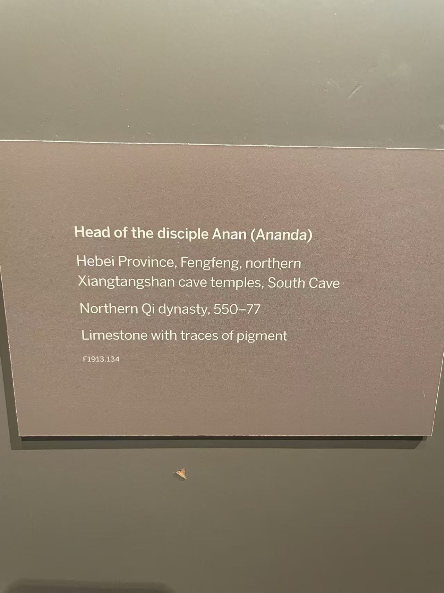

XIANGTANGSHAN / 北响堂南洞（刻经洞）
年轻弟子头像（传阿难）
Head of the disciple Ananda

- 收藏
- 弗利尔美术馆
- 编号
- F1913.134
- 年代
- 北齐（550—577）
- 材料
- 石灰岩，残留彩绘
- 原属洞窟
- 北响堂南洞（刻经洞）
作品札记
头顶光素，没有佛像的发卷，也没有菩萨的冠饰。低垂的眼睑、闭合的嘴唇与细长的耳垂都保存下来。馆方将这颗年轻弟子头像解释为可能表现释迦牟尼的弟子阿难。
现场展签、响堂山项目及馆方部分资料把它归于北齐、北响堂南洞；馆方另一段说明仍提出龙门唐代说，来源尚有分歧。弗利尔于1913年从山中商会购得这件头像，1920年进入馆藏。
资料说明
馆方资料中的年代与来源采用北齐、北响堂南洞；同一页面的另一段说明却根据风格提出龙门唐代说，并提到响堂山的可能性。两种归属仍并存。
现场展签

